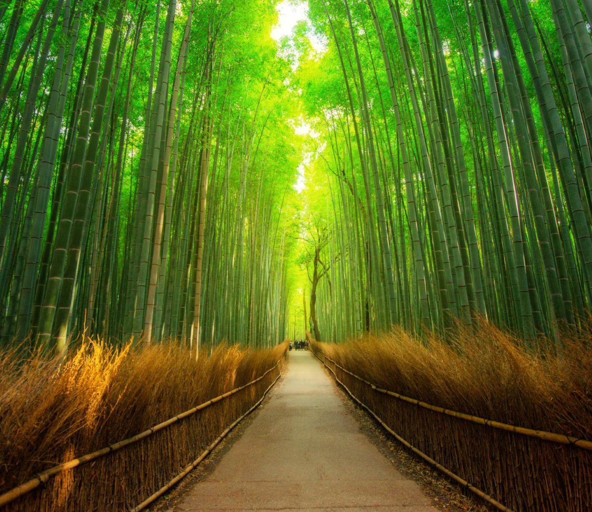

Must-See Landmarks
京都の場所
Fushimi Inari Shrine
Thousands of vermillion torii gates, with a network of trails behind its main buildings. Leading into the wooded forest of the sacred Mount Inari.
Higashiyama District
A wood-built historic quarter of narrow lanes lined with traditional pottery stores, tea houses, and restaurants for multi-course kaiseki meals.

Arashiyama Bamboo Grove
Walk through a forest of tall bamboo trees that create a tranquil and peaceful atmosphere. Admire the beauty of the towering bamboo stalks.
